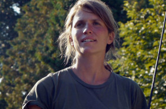

EVA

Melanie Jilg – Germany 2015
85 min – HD – German OV Engl. ST
D+DoP+E: Melanie Jilg – Sc: Melanie Jilg, Sarah Lena Ruh – S: Cornelia Böhm – Trumpet: Matthias Lindermayr
"Epic, archetypical and powerful, this timeless road to nowhere is both: an ode to freedom (of movement) and a spiritual and sensorial adventure trip. Built on variations of speed and light, dimensions are clashing, ultra slow pans, extremly inspired visionary shots and the verses of an Icelandic poeam of the XIII century. A mesmerizing work from the cinematographer of 'Weiss der Wind'." – Visions du Réel
monday 12 oct 6.30 pm werkstattkino
Interview with Melanie Jilg taken at Vision du Réel, Nyon.
Melanie Jilg born 1984 in Munich. She studied media art and experimental filmmaking at the University of Arts and Design Karlsruhe with Thomas Heise and Andrei Ujica.
Films The Cat Would Rather Be A Bird 2007 – About Everyday Things 2009 – The Wind Only Knows (Cinematography) 2013 – Cemetery 2014 – EVA 2015